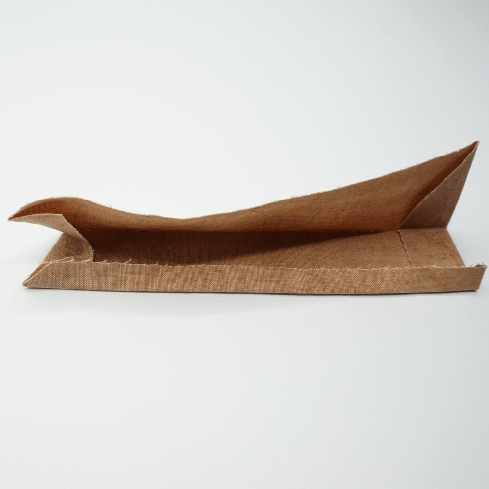
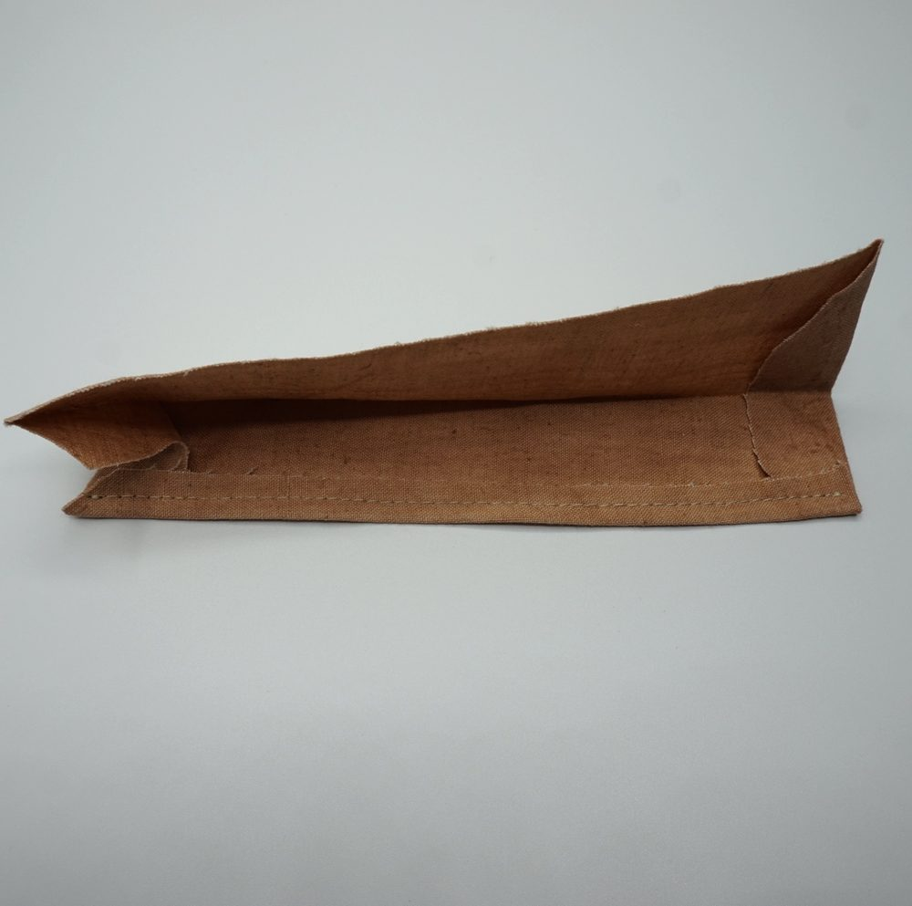
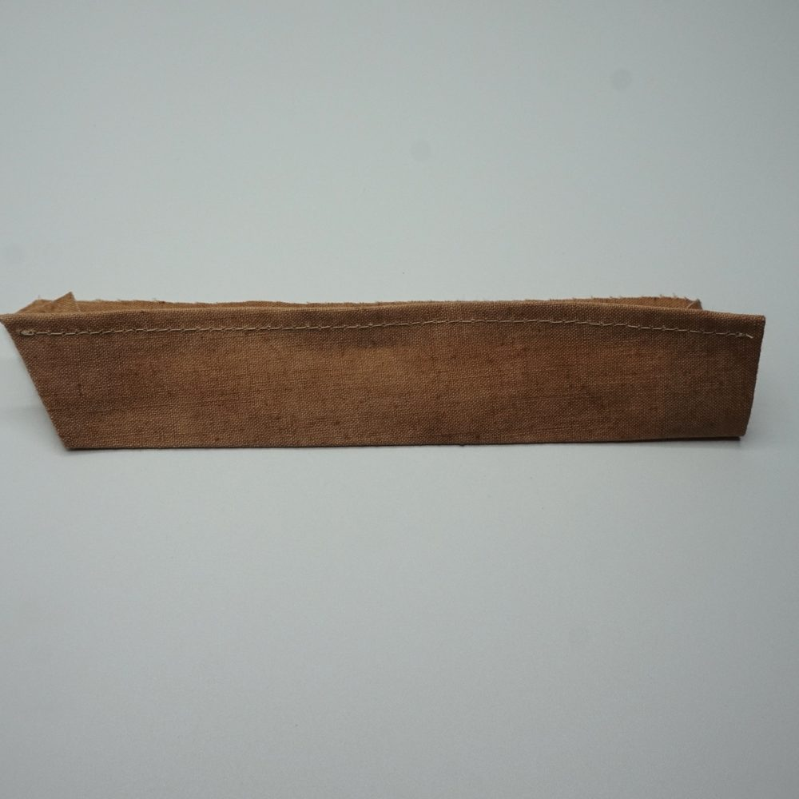
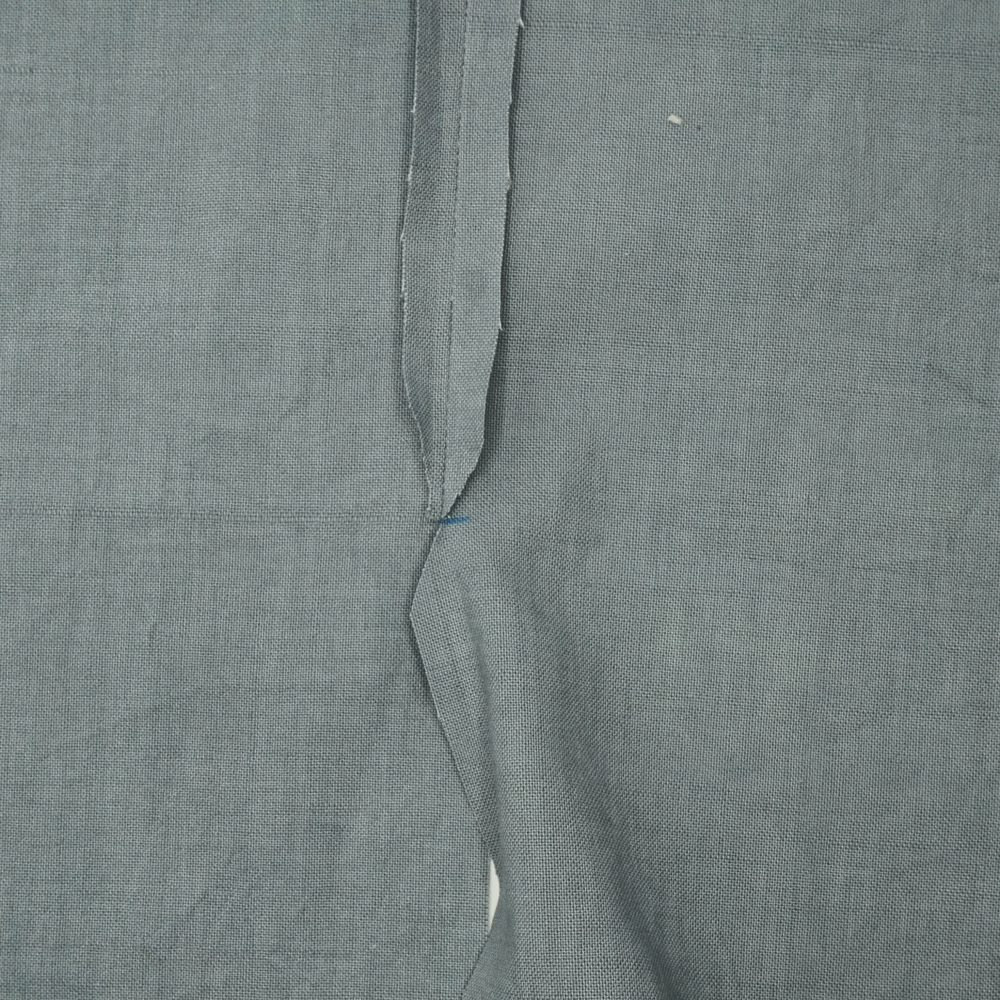
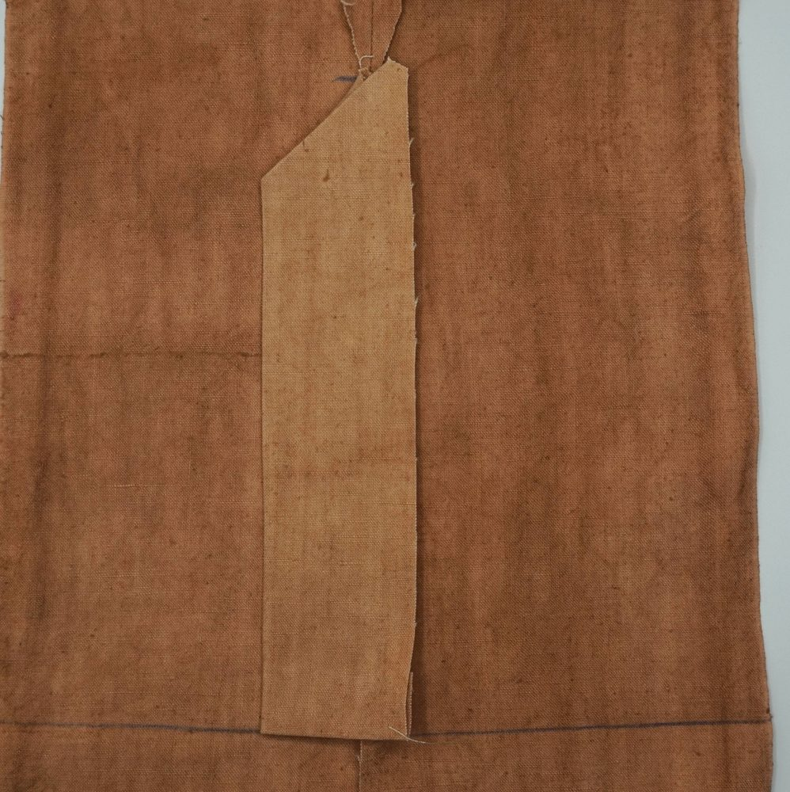
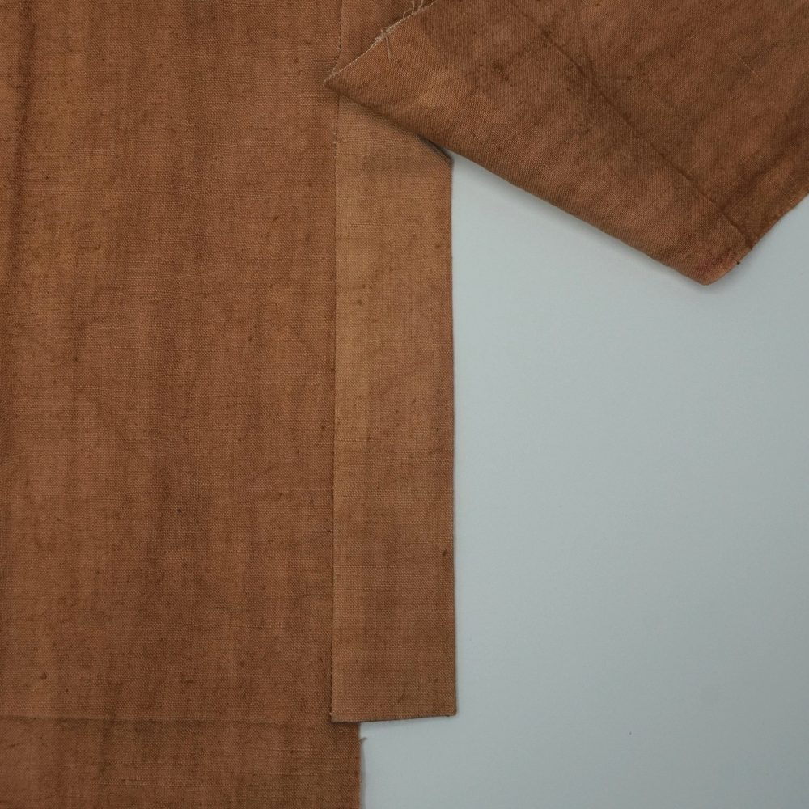
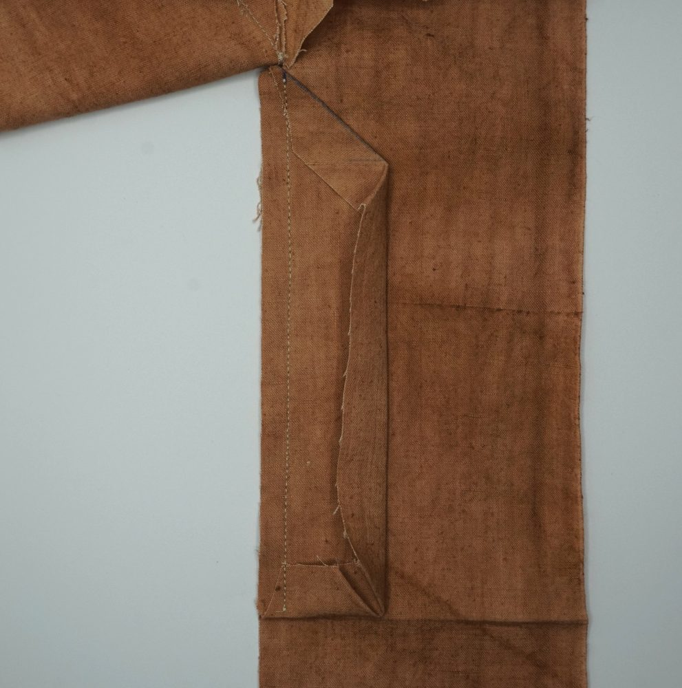
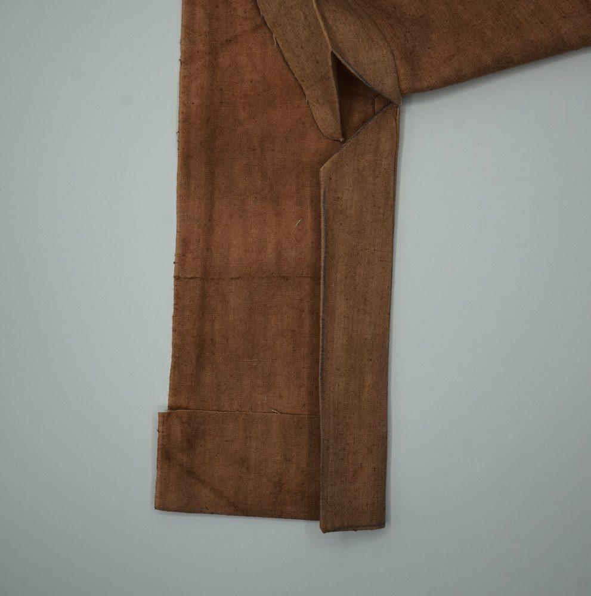
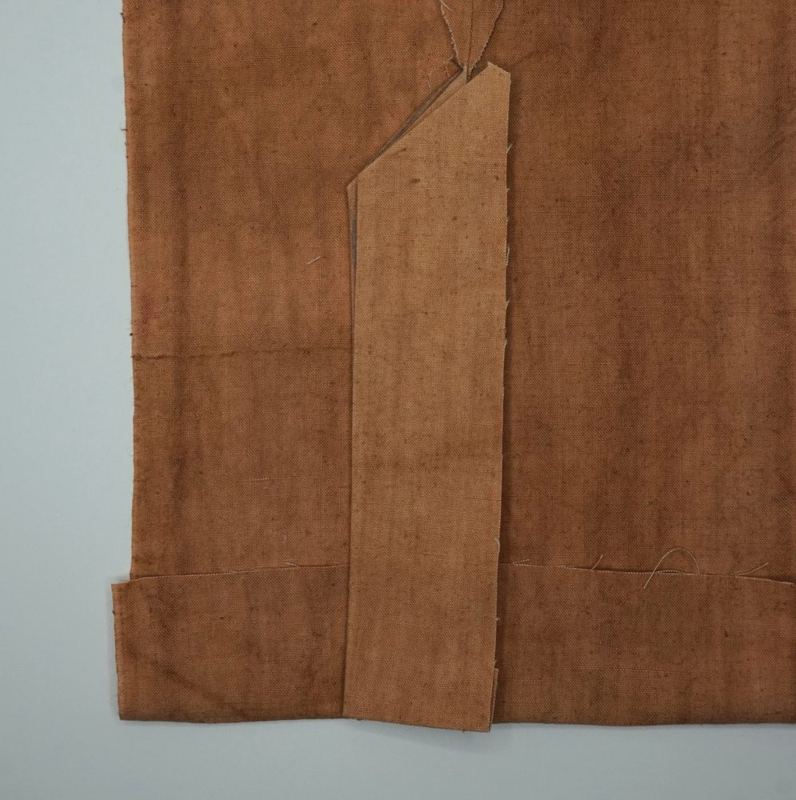
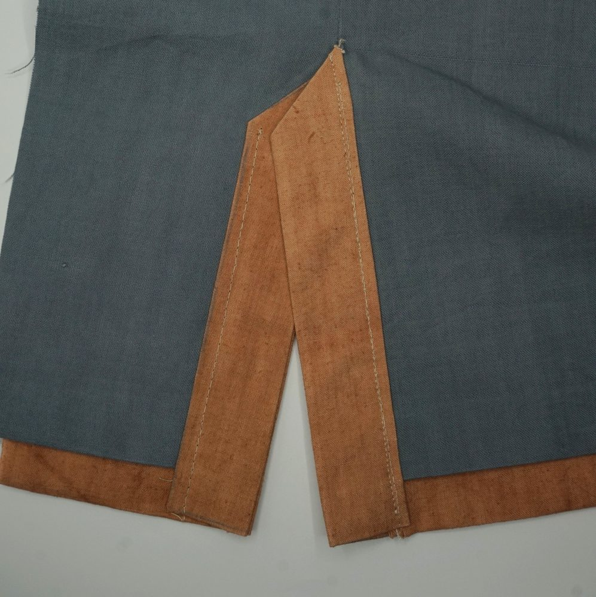

Saharienne doublée : guide de couture et d’assemblage
Ce guide donne l’ordre de montage de la saharienne doublée, de la découpe à l’assemblage des manches sur le buste, à l’assemblage final à la doublure. Autant que faire se peut, des photos remplacent de longues explications : « Des images valent mieux qu’un long discours ».
1. Découpe
Après la découpe des pièces, marquez soigneusement les repères :
Pour les pièces à doubler :
- Devant gauche et devant droit. Pour ne pas vous retrouver avec deux devants gauches ou deux devants droits, posez les devants face à face, lignes de boutonnières et de boutons l’une contre l’autre. Placez les repères de boutonnières sur le devant gauche et ceux des boutons sur le devant droit (pour une saharienne femme, c’est l’inverse), puis marquez le devant de chaque pièce d’une marque distinctive.
- Les lignes de pli du bas, devant et dos, les parementures et les manchettes.
- L’emplacement des poches, à votre choix et à vos dimensions.
- Les pinces du dos.
- Les repères de haut et de bas d’emmanchure sur Manche 1 et Manche 2.
- Un repère de milieu sur le col, à l’emplacement du pli central, sur la ligne du bas (la moins courbe).
- Sur la pièce du devant, le repère haut de la patte de boutonnage.
Pour les pièces de doublure :
- Un repère de milieu sur le col, à l’emplacement du pli central, sur la ligne du bas (la moins courbe).
- Les repères de haut et de bas d’emmanchure sur Doublure manche 1 et Doublure manche 2.
2. Surfilage
Aucun surfilage du fait de la doublure.
3. Thermocollage
- Le devant thermocollant se pose sur le devant.
- Le col thermocollant se pose sur la pièce du col du dessus, le col en place et replié. Si vous utilisez deux tissus pour le col, le thermocollant va sur le tissu visible.
4. Couture et assemblage
Plis et petites pièces
- Cousez le pli des manchettes (pli à 2 cm, couture à 1,5 cm), puis assemblez les manchettes, les côtés (a) ensemble, les côtés (b) ensemble.
- Assemblez le col sur trois côtés en laissant le bas libre, puis retournez-le. Une surpiqûre sur les trois côtés améliore le rendu.
Préparation de la fente
Préparation des pièces








Manches
- Assembler les pièces de manche et leur doublure. Pour ne pas vous retrouver avec deux manches droites ou deux manches gauches, placez vos pièces face à face, en symétrie (tête de manche contre tête de manche).
- Si vous ajoutez une ou des poches de manche et/ou une cartouchière, c’est le moment : après, ce sera plus difficile.
- Assemblez d’abord un côté, surpiquez-le si vous le souhaitez, puis assemblez les deux autres côtés et surpiquez-les. Le surpiquage n’est pas obligatoire, mais il renforce la couture et donne un fini particulier (pas de surpiquage sur les pièces de doublure).
- Assembler les manchettes aux manches. Vers l’intérieur si vous ajoutez des pattes de manche (endroit contre endroit, puis retournez). Sans pattes de manche, vers l’extérieur ou vers l’intérieur à votre choix ; envers contre envers pour des manchettes extérieures.
Dos
Réalisez les pinces du dos.
Devant
- Positionnez vos poches (l’emplacement indiqué sur le patron est indicatif) et assemblez-les.
- Assemblez partiellement les parementures avec les devants en arrêtant la couture au repère haut de la patte de boutonnage.
- Retournez sur l’endroit et marquez bien le pli au fer. Pas de surpiqûre pour l’instant : si vous en voulez une, faites-la après l’assemblage du col.
- Réalisez les boutonnières.
Devant et dos : le buste (pièce d’épaule dans le cas de l’option)
- Assemblez les deux pièces de dos, puis les deux pièces de doublure dos. Attention : coudre du haut des pièces jusqu’au repère, couper le repère sans dépasser la ligne de couture puis dégrossir les deux côtés en coupant les angles, sur le devant et le dos.



- Assemblez les dos avec le devant droit et le devant gauche. Faites-en de même pour les doublures correspondantes.
- Si vous avez prévu une surpiqûre, surpiquez la couture d’épaule et les coutures de côté, la surpiqûre dirigée vers le dos (encore une fois, inutile de surpiquer les pièces de doublure).
- Marquez bien au fer le pli du bas des pièces Devant et Dos.
Buste et col
- Pour éviter toute confusion, le plus simple est de regarder une vidéo explicative très claire : assembler le col (à partir de la 3e minute).
- Le col étant assemblé, vous pouvez finir la couture de la parementure avec le devant.
- Retournez à l’endroit : le col, ainsi que l’assemblage du devant et de la parementure, sont terminés.
Assemblage des fentes dos sur le dos
Les photos prises de façon séquentielle détaillent toutes les étapes de l’assemblage. La qualité de l’assemblage dépend en grande partie du respect des marges de couture : n’hésitez pas à marquer au feutre effaçable là où votre couture doit commencer ou doit s’arrêter pour éviter des dépassements.












Vous n’êtes pas vraiment sûr de vous : entraînez-vous sur de vieux tissus en découpant deux bandes pour simuler la portion de dos et de doublure accueillant la fente et les deux pièces de fente.
Buste et manches
C’est un assemblage de manches standard, que de nombreuses vidéos expliquent en ligne. Le point critique est d’éviter la confusion entre manche droite et manche gauche.
- Le buste posé à plat, endroit visible, positionnez les manches et marquez-les d’un signe distinctif (par exemple D et G).
- Placez le buste retourné sur l’envers, la patte de boutonnage face à vous.
- Présentez les manches en les glissant par l’intérieur et fixez la ligne de couture avec des épingles. Respectez les repères : haut de manche sur la couture d’épaule, bas de manche sur la couture dos-devant.
- Cousez, puis retournez et vérifiez vos coutures. S’il se trouve des plis, reprenez la couture aux endroits concernés.
- Repassez le pli vers le côté buste et surpiquez, si vous le souhaitez, vers le côté buste.
Assemblage de la saharienne avec sa doublure
Détails : assemblage de la doublure à la fente.


Finition de la fente





La suite de cette partie, l’assemblage de la saharienne et de sa doublure, est en cours de rédaction.